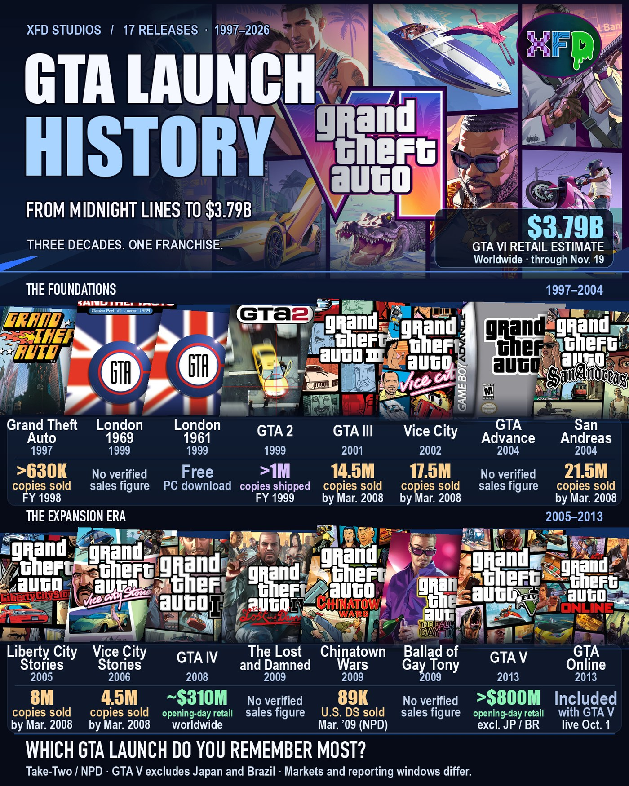
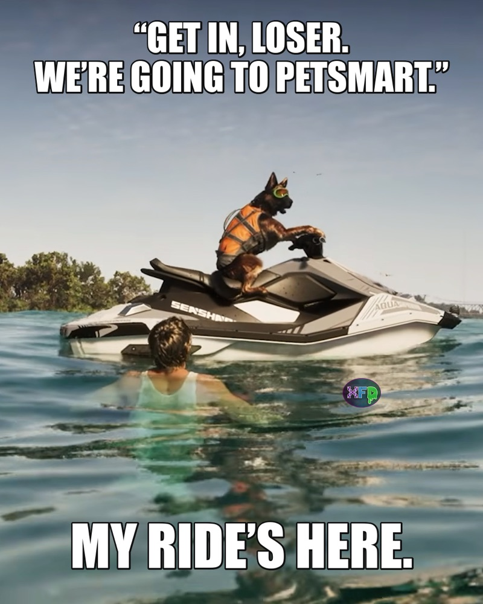
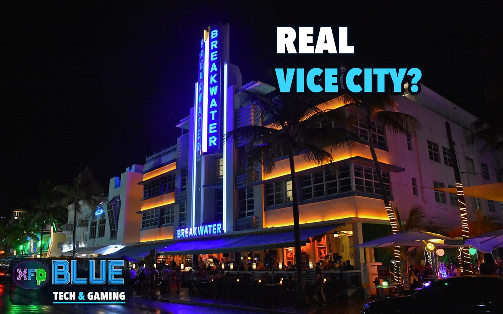
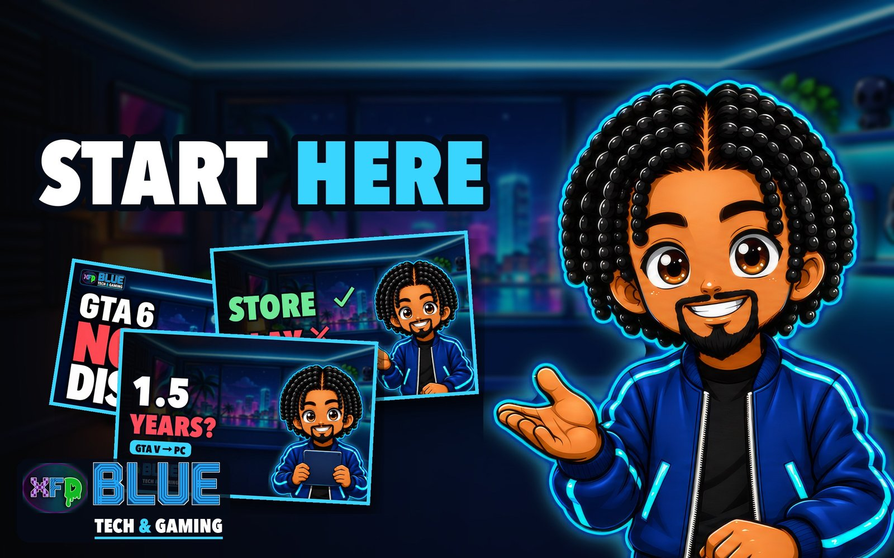
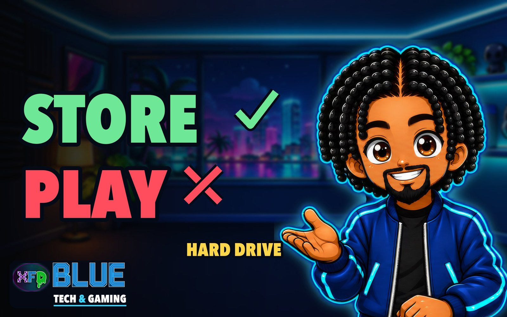
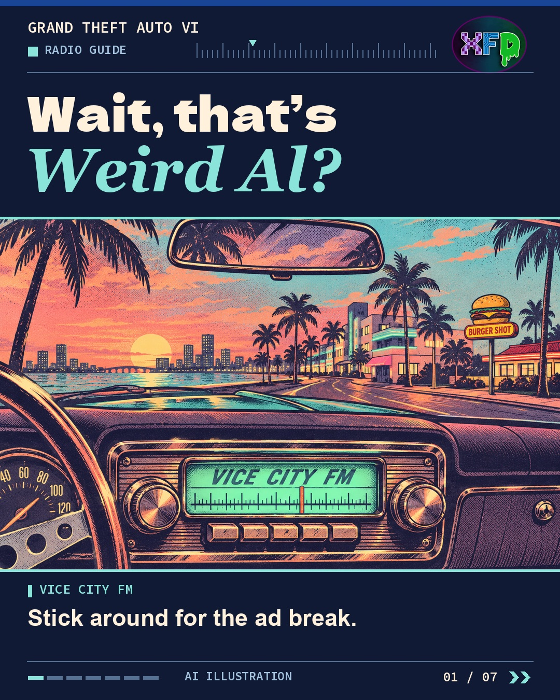
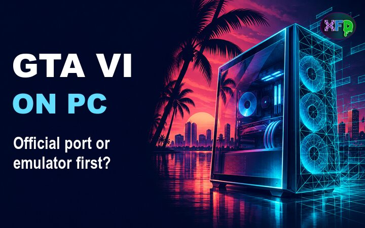
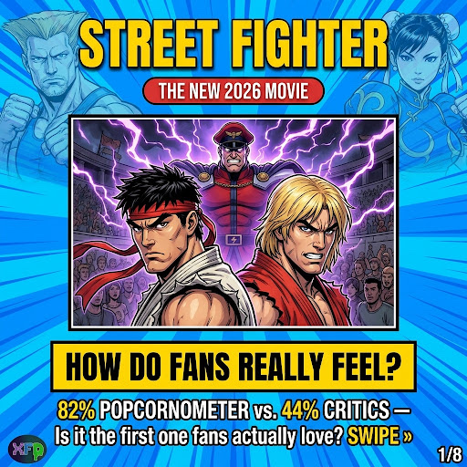

Latest entries

GTA Launch History: From 1997 Midnight Lines to GTA 6 (All 17 Releases)
Three decades of Grand Theft Auto launches in one poster — from a 1997 top-down PC debut almost called Race-n-Chase to digital preloads and GTA 6.

"My Ride's Here": The GTA 6 Jet Ski Dog Memes 🐕🌊
A dog in green sunglasses and a life jacket pulls up on a jet ski in the middle of Gambit Bay. Two captions, one very questionable ride to shore.

GTA 6 vs Real Florida: Vice City, the Keys and Grassrivers Side by Side 🌴
Leonida is Rockstar's fictional Florida. We took a field trip to the real Ocean Drive, Florida Keys and Everglades to see what lines up with GTA 6.

GTA 6 Launch Week: Everything XFD Covered, in One Place 🎮
The box with no disc, making room on PS5, missing download codes, the car-theft catch, who's on the radio, and the PC question: every XFD GTA 6 guide from launch week, connected.

Is a Hard Drive Enough for GTA 6? Store vs. Play Before You Spend a Dime 💾
A USB hard drive can store your PS5 games, but it can't play them. Here's the free fix, the cheap fix, and when GTA 6 actually calls for an internal SSD.

Wait, That's Weird Al? GTA 6's Radio Hosts, From Vice City FM to Slayer 🍔📻
"Weird Al" Yankovic hosts Vice City FM in GTA 6, and he's the Burger Shot guy too. Here's who's on the dial, from Jeremy Irons to TLC and Slayer.

GTA 6 Car Theft Has a Catch: Getting In Isn't the Same as Driving Off 🚗🔑
Rockstar's Rob Nelson says stealing cars in GTA 6 takes more steps now: a slim jim to get in, and sometimes a key cloner just to start the engine. OC breaks it down.

The Golden Girls Songwriter Made a Darkstalkers Theme
Eikichi Yazawa’s “The Trouble Man” connects Darkstalkers to Andrew Gold, the songwriter behind “Thank You for Being a Friend.” Gold wrote the English lyrics; Yazawa composed and performed the song. My documentary follows it from a 1995 Japanese CD single through PlayStation, television and anime, explains the missing soundtrack track, and revisits the memories and revival hopes that have kept it alive.

Waiting for GTA 6 on PC? What Rockstar's Past Launches (and the Emulator Scene) Can and Can't Tell You 🖥️
GTA 6 launched on PS5 and Xbox Series X|S with no PC version announced. Rockstar's history shows how long PC players usually wait, and why emulator tests aren't a shortcut yet.

GTA 6's Box Has No Disc: What You're Actually Buying (212 GB + Pre-Load Times) 📦
GTA 6's boxed copy is a download code with no disc, and PS5 players need at least 212 GB free. OC breaks down what Sony and Rockstar said, pre-load start times, the PS5 pre-order catch and a 7-step launch checklist.

When Your Next PlayStation Game Is Just a Code: 100 Days After Sony Ended the Disc 💿
Sony is ending physical disc production for new PlayStation games in January 2028. My 100 Days documentary follows the backlash: the petition, the boycott, Sony's response, Xbox's Disc to Digital, GTA VI's code in a box, and who really owns your games.

PS5 Modders and the Fight Over Game Ownership: Old PS2 Discs Running on Modified PS5s 🎮
People are running old PlayStation 2 discs on modified PS5s without Sony's permission, while Sony phases out discs for new games in January 2028. Hundreds of thousands fought back. So why didn't Sony change its plans?

Street Fighter (2026): Fresh or Rotten? Critics vs. Fans and the Franchise's 38-Point Gulf 🥊
The new Street Fighter (2026) movie started a war between critics and fans: 44% on the Tomatometer vs. 82% on the Popcornmeter, a 38-point gulf. Trash adaptation, or are critics out of touch with how game movies should feel?

Sony Ends Physical PlayStation Games in 2028 — Nintendo's About to WIN
Sony just confirmed it — new PlayStation games go 100% digital starting January 2028. No more discs. And I don't think they thought this all the way through. 🎮❌ In this one I break down why this isn't just a collector problem — it's a retail problem. Walmart, GameStop, Target, Best Buy… they all lose when physical games die. And when you can't actually OWN what you buy anymore? That's a scary road. My money? Nintendo's about to step up and take the throne. But I wanna know where YOU land.
Apple Just Raised Prices Across Its Entire Lineup — Here's the Real Reason Why
Apple raised prices across Macs, iPads, Apple TV, HomePod and Vision Pro, and Apple TV jumped 54%. The reason: AI data centers are buying up the memory chips everything else needs.

Sonic Racing Crossworlds Year 2: Sega Still Has Answers to Give
How are we racing Evangelion's Unit-01 and actual Godzilla in Sonic Racing CrossWorlds? Sega's Year 2 crossovers are wild, and I need answers. Here's what's confirmed so far.
Where Did Your Xeno Story Start? XFD's JRPG Origin
Mine was Xenosaga, in the middle of my whole Neon Genesis Evangelion phase. Xenogears, Xenosaga, Xenoblade: where did YOUR Xeno story begin?
New to Apple. But Not New to Tech. iOS 27's 'New' Features Already Existed
iOS 27's 'new' features: Google did most of them back in 2017, and Splitwise did one in 2011. I made the receipts. Which one feels most 'finally' to you?
Nintendo Is Staying Cautious on AI — and That Might Be the Smarter Move
While other companies rush into generative AI, Nintendo seems focused on protecting its IP, its game quality and its fans' trust. Here's why staying cautious might be its biggest advantage.

Your Favorite 90s Video Game Is Your Biggest Personality Red Flag
Your favorite '90s game might reveal your toxic trait. Mario 64 avoids structure, Zelda turns pain into lore, Sonic 2 rushes everything, NiGHTS lives in delusion, Street Fighter II argues to win, Pokémon keeps backup options and Resident Evil fears losing control.
The Numbers Don't Lie: Nintendo's Evolution from Couch Co-op to the Switch Era
From '90s and 2000s couch co-op to the Switch 2's fast start, I tracked Nintendo's console sales era by era. Which Nintendo generation defined your childhood?

Before Gaming Got Scammed: The Nintendo Wii Era They Don't Want You to Remember
The Wii launched at $249 with Wii Sports in the box. The Switch 2 launched at $449 and hit $499 in September. We're paying more for hardware, $70-plus for games and $50 a year to rent our childhood memories back. Are we moving backward?

Before MK2: Cary-Hiroyuki Tagawa Built the Mortal Kombat Movie on His Shoulders
As Mortal Kombat II hit theaters, I paid tribute to the man who set the standard: Cary-Hiroyuki Tagawa. From Shang Tsung to The Man in the High Castle, Teen Titans and Johnny Tsunami. Rest in peace to a true legend.

PBS Kids — POV: You forgot these defined your childhood 📼 #nostalgia #90skids #shorts
The nostalgia hit me like a truck. From Wishbone to Ghostwriter, these PBS Kids shows raised a whole generation. Which one did you run home from school to watch?